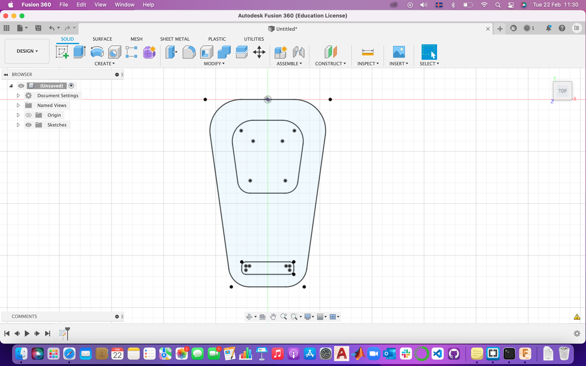

Project 3
3D printing
The objective
The objective of this project was to design an object you can 3D print (additive manufacturing) but cannot fræst(!!!) (subtractive manufacturing) as well as 3D scanning an object.
Preparation
The first thing I did was look for inspiration for what I want to create. I googled “small 3D printing ideas” since we were only allowed to use 90 grams of material for our object. I browsed through various ideas and ended up wanting to make a bottle opener. I was a little worried the PLA material would not be strong enough to handle the force of opening a bottle so I googled ideas on how to prevent the opener from breaking and came across a design I though was really smart. The design contains a hole for a coin and the coin is then used to open the bottle. Here you can view the design I found online.
Execution
I decided to draw my object in Fusion 360. I drew a parametric outline of my bottle opener which you can see, along with measurements, in the picture below:

Next, I extruded the sketch out — mm and drew a new sketch on the bottle opener for the hole for the coin. I decided to use the 5kr coin since that is all I could find and measure. The measurements of the coin were:…… and I created the hole in the same ones. Here you can see a picture of the bottle opener after extruding and making the hole.
Before I could print my object I had to print a small test which checks for how long I can print between two foundations before it breaks. I was mostly interested in seeing if it could handle printing 25mm, because that is the diameter of the coin, which it could.
I exported the Fusion drawing as a 3ML file and opened it in Prusa….. . I decided to use Generic PLA and the type of printer I used is Original Prusa i3. Below you can see a picture with the settings in the software. I exported the file onto an SD card and inserted that into the printer.